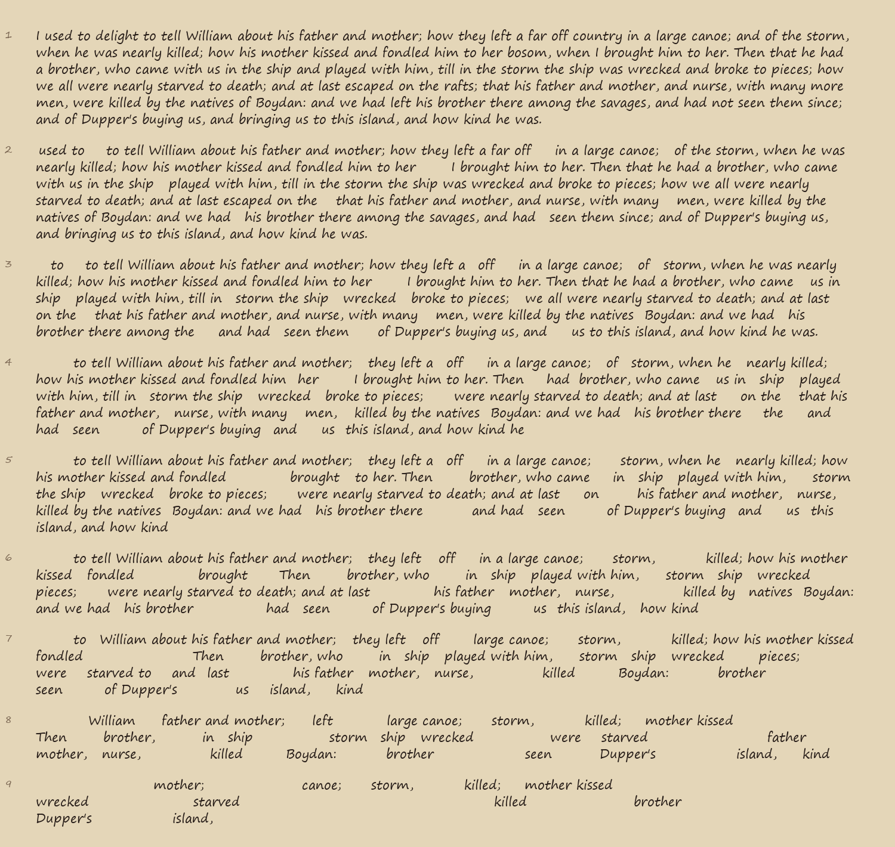
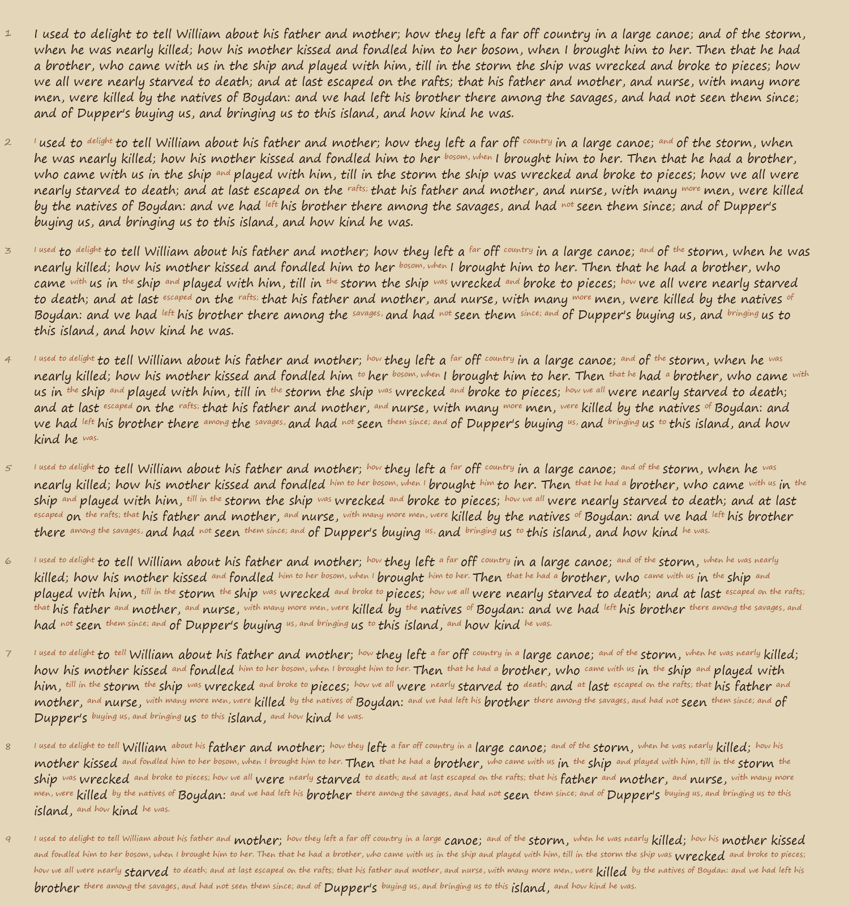
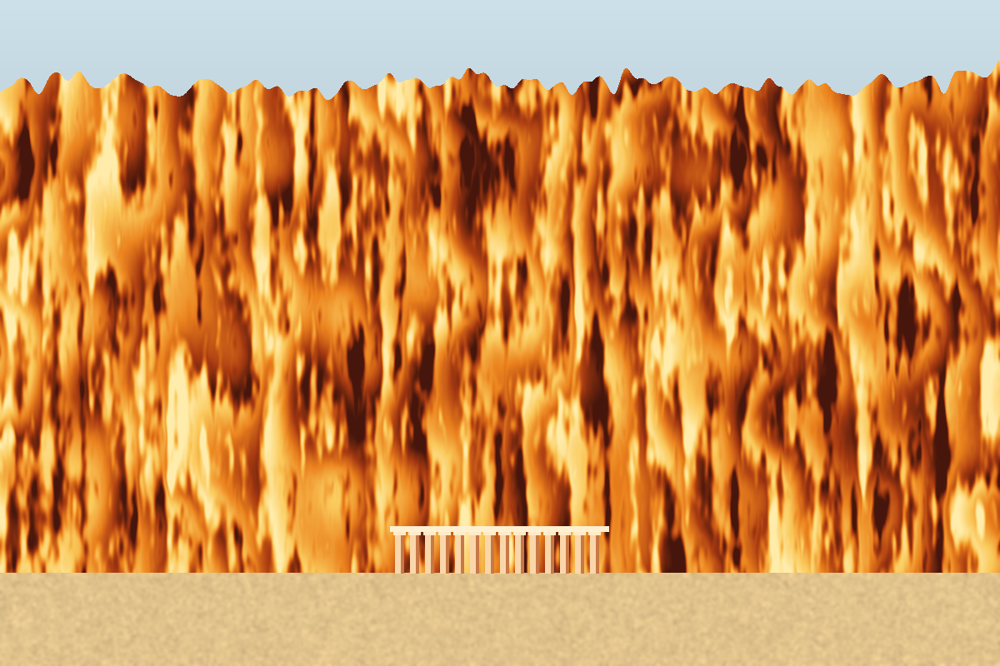
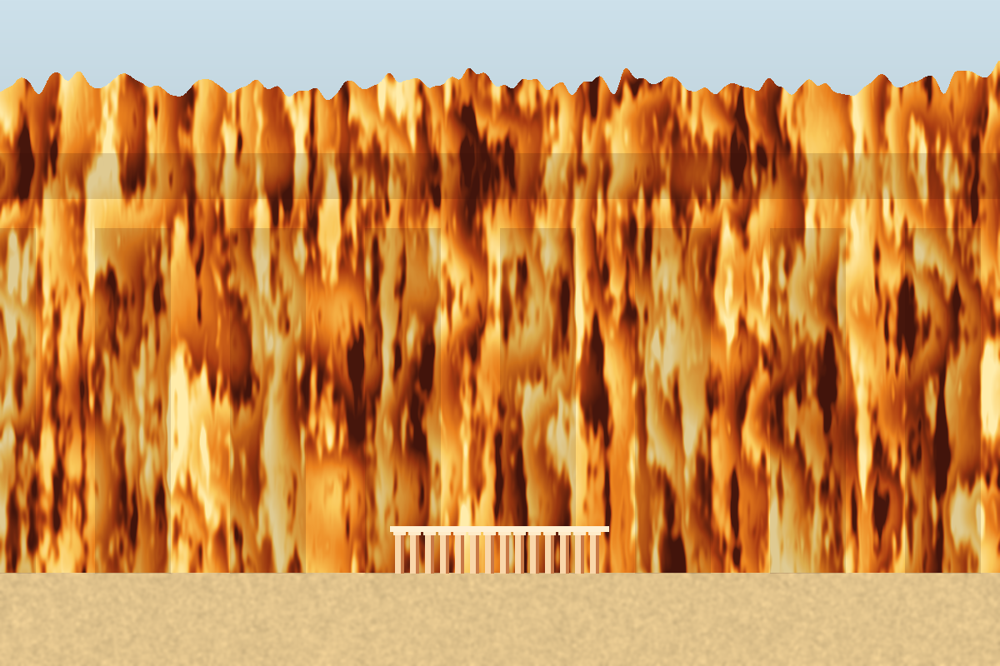
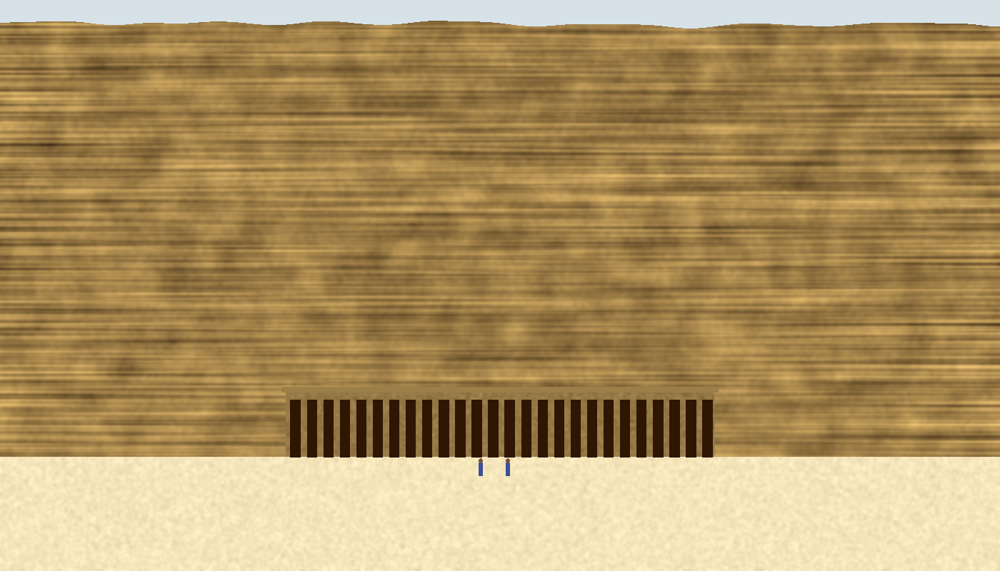
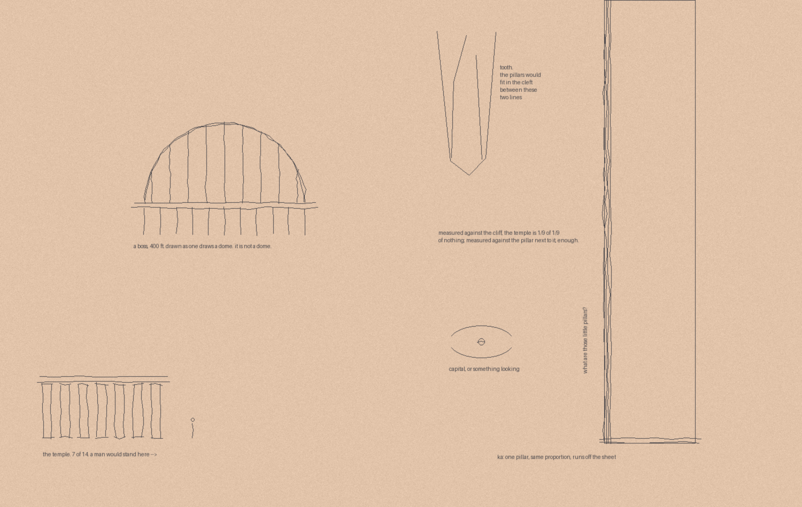
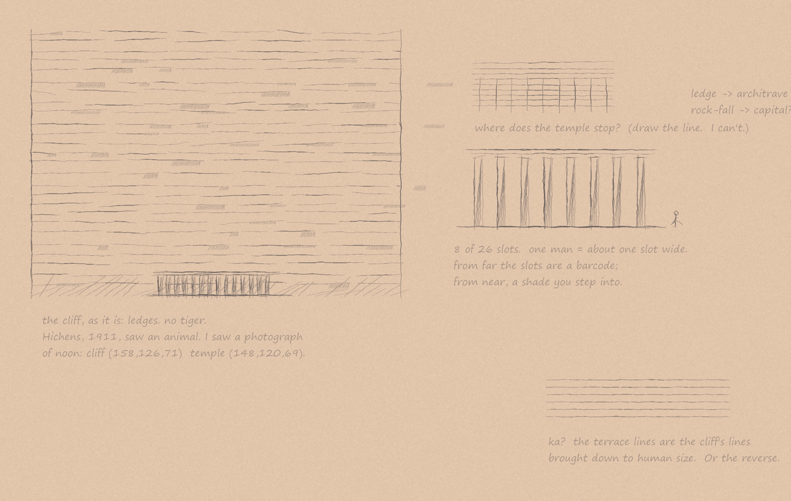
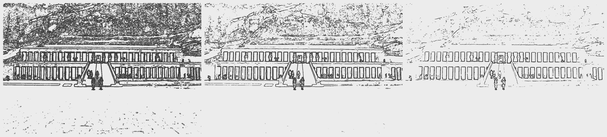

A castaway tells a small boy, nine times, how his parents died. Each time he keeps less. The second picture keeps what he lost, small and rust-coloured, in the gaps: the loss does not leave the page.


"What are those little pillars?" — a temple set small against a burning cliff. In the second, the cliff is the temple's double, nine times larger, nearly invisible.


Then I looked at a photograph of the real place. The cliff is not tiger-coloured; it is the colour of the temple. The queen's wile is camouflage: a row of shadow cut into the stone.


Second sheet, after the photograph.

The same photograph, drawn only where the difference is bigger than 4, 8, 14. The line between temple and cliff moves with how much you will count.
